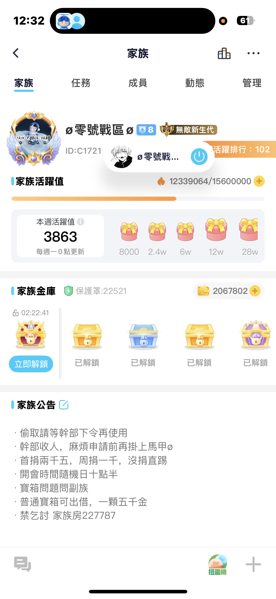
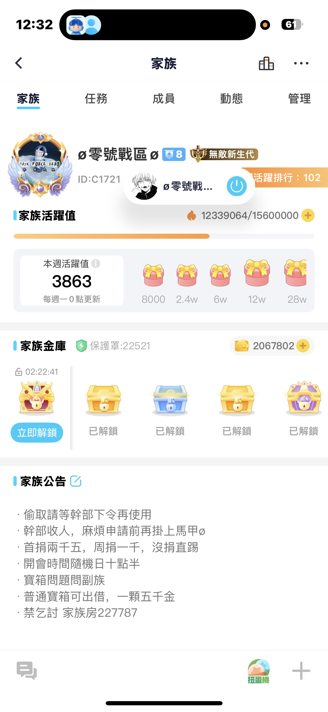

weplay
2025 年 8月 4號
家族第一次黑燈排
一段友情
2015 年 冬天
在最孤單的時候，遇見了真心的朋友。那份溫暖，讓我至今感恩。

跨越的瞬間
2020 年
經歷了挑戰，克服了挫折。那一刻我明白，成長就是勇敢地走過未知。

關於這本回憶錄
這不是秘密，而是屬於我的故事。希望每一段回憶，都能帶給看到的人一點溫度。
那些重要的時光，被記錄下來，公開分享。
家族第一次黑燈排
在最孤單的時候，遇見了真心的朋友。那份溫暖，讓我至今感恩。
經歷了挑戰，克服了挫折。那一刻我明白，成長就是勇敢地走過未知。
這不是秘密，而是屬於我的故事。希望每一段回憶，都能帶給看到的人一點溫度。